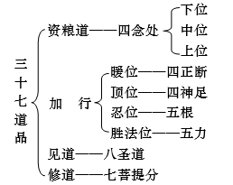

第六品分别圣道品问答题
574、修道、见道主要有哪些差别？
答：（1）从有漏、无漏上分别：
见道唯是无漏：见道是三界尤其是有顶见断的对治法，并且同时能断除上、中、下九品见断。
修道通有漏无漏：世间修道是有漏法，因其增长有漏四禅、四无色定；出世间修道是无漏法，其串习见道之义而不会增长有漏法。
（2）从断除烦恼上分别：见道以了知所缘的方式而断除所断；修断以修学对治的方式而断除所断。
（3）从时间上来分：见道可于一生中圆满；修道可于多世中圆满。
（4）从现前二道的身份上分：见道欲界；修道三界皆可现前。
575、为什么第一品和第六品所讲的四谛的次第不相同？
答：第一品宣说四谛次第道、灭、苦、集。道是“无漏道谛”之道；灭是“抉择灭”之灭；苦集是“苦集世间”之苦集。此种次第经中亦有宣说。
与第一品不同。第六品说苦、集、灭、道四谛，是以现证次第而宣说。因为于见道时，首先现证苦谛，其后是集谛，再后是灭谛，最后是道谛。故以此次第而说。见道时以如是次第现证，是因为在资粮加行道时也是以如是次第观修。就如同先知道病患，再查知病因，为了灭除病苦而以吃药等作治疗。
576、以何方法建立诸行皆苦的道理？
答：一切有漏诸行可分三种，苦乐舍。与此三受相应的心心所，不相应的增上缘及所缘缘，皆是三受的所依与助伴，即这些是引发受生起，或与受俱时存在的，所以它们随着受而被分类。然而说三者，即一切有漏诸行皆是苦的本性，是因为，苦受的本体是苦苦，如经言：诸苦受生时苦，住时苦，故名为苦。乐受的本体是变苦，如经言：诸乐受生时乐，住时乐，坏时苦。舍受的本体是行苦，实际上行苦是遍于一切有漏诸行的，如经言：若非常即是苦。
经部说：乐无实体，唯是苦苦性，只不过是苦轻了而觉得有乐受。如用一个肩膀挑担子，累了换个肩膀则有乐受，实际上非是乐受只不过是苦轻了而已。
有部：乐有实体，若乐无实体，那么苦也无从安立。观乐为苦，是从其变苦及行苦的角度来安立的。
此处有部观点合理。总而言之，苦受是以其苦苦性安立；乐受是以变苦性、行苦性而安立为苦；舍受以行苦性而安立为苦。实际上一切诸行皆可以非常性即行苦性而安立为苦，故说诸行皆苦。
577、以比喻说明小乘所承许的胜义谛和世俗谛。以教证宣说通达二谛的重要性。
答：通达二谛的重要性：
二谛即胜义谛与世俗谛。二谛在小乘、大乘之唯识中观及无上密法，都有不同的认识方法。若不能分清楚胜义谛、世俗谛之差别，则很难通达佛法的奥妙与深义。《中论•四谛品》中说：“若人不能知，分别于二谛，则于深佛法，不知真实义。”就是说任何一个修行人若不能了知胜义谛和世俗谛，那么甚深佛法的奥义根本不可能通达的。无垢光尊者的《大圆满心性休息大车疏》发菩提心品中讲智慧度时也以密宗的方式分析了二谛。佛陀说法，有些是针对胜义谛而说，有些是针对世俗谛而说，若不能通达是针对何种情况而说，则即成为修学佛法之最大障碍。
小乘有部所承许的胜义谛和世俗谛：
世俗谛：如果对何法摧毁成部分或以智慧分别对何法加以破析后，那么执著它的心就不能再趋入，诸如瓶子与水，即是世俗谛中具有的法。（即瓶子被打破成片，则不会再执片为瓶子，把水分析成色香味触，则不会执色香味触为水。）
胜义谛：胜义谛中具有的法是指世俗谛以外的法。也就是若被摧毁或被智慧破析则执著彼之心不会再趋入的法之外存在的法是胜义谛。例如色的极微尘与无为法。（胜义谛之法实有，然其不能再被摧毁与破析，即执著其心不变常有而不会因被摧毁与破析而不再如是执著，如极微恒时被执著为极微。）
578、通过什么样的道次第或方便方法而现前真谛？
答：应通过守戒、闻思修之次第而现前真谛。
守戒：不散乱之因，守护七种别解脱戒中的任意一戒；
听闻：不愚昧之因，听闻符合现见真谛的法生起闻所生慧；
思维：抉择之因，思所生慧；
修行：远离烦恼之因，极为精进修行，从而现见真谛。
579、闻思修智慧的本体是什么？对此有部与世亲论师有什么不同观点？
答：有部：三慧之本体：
闻所生慧：只是趋入名称的有境；
思所生慧：名、义二者的有境，即时而趋入文字引出意义，时而趋入意义引出文字；
修所生慧：不观待文字而趋入意义，即唯一是意义的有境。
世亲论师：闻所生慧：以可信的教量所生的智慧；
思所生慧：以理观察所生的智慧；
修所生慧：以等持所生的智慧。
580、依靠什么方法才能圆满修行？为什么叫知足少欲？
答：补特伽罗依身心二远离而圆满修行，即身体远离愦闹、内心远离妄念。
知足少欲是不知足、大贪欲之对治。
不知足：对本已获得的法衣等，一再贪爱即是不知足；
大贪欲：贪图谋求未得的（法衣等资具）为具大贪欲。
（知足少欲属三界、无漏，其所对治的不知足、大贪欲唯是欲界所系，知足少欲体是无贪，所对治的二种是欲贪为性。）
581、什么是四圣种？根据自己的理解宣说四圣种所说明的问题和必要性。
答：四圣种是：
（1）以菲薄法衣为满足；（2）以粗粝斋食为满足；
（3）以简陋床榻为满足；（4）喜欢闻思修行。
四圣种说明的问题：
前三圣种：宣说修行解脱的威仪之理（即知足少欲即威仪）；
第四圣种：说明了圣种之事业。
以知足少欲为威仪，再加上闻思修行将迅速获得解脱。
宣说四圣种的必要性：对治贪爱身体之我执、我所执。
宣说前三种：为了暂时息灭贪求我所执的法衣等物之欲望；
宣说最后一种：为了将贪爱我之身体的我执斩草除根。
具有三种贪爱者，在《宝性论》中说是为邪爱者。《经庄严论》中说，具此三种贪爱者是没有佛性者，即不具成佛种性者，虽然说根本不具佛性者是没有的，但是具此贪爱者却是暂时远离了佛道。密宗虽然是将贪欲直接转为道用，但亦须具足如是圣者种性的基础，否则密宗之修行更是不会成功的。《宝积经》中对四圣种之每一种性都有广说。所以说作为修行之人，具此四圣种是至关重要的。
582、依照《俱舍论》第六品的道次第和在发菩提心的情况下写出“我的理想”的作文。
答：所谓理想，就是如理之想，若不如理，则是幻想。对于将来作一种合理的想象，便是理想。唯有修学佛法者，才是最如理的，因为最究竟的因果缘起的道理只有佛法中才有。也曾寻觅过许多的道路，并认为其最终的结果是具有价值并值得追求的。然而直到遇到了佛法以后，才真正觉得整个身心有了究竟的依处。成佛就是我最终的理想，通向佛果的道路是漫长的，只有利他是这条道路上最扎实的脚印。把因作好了，果必定会现前的。所以利他就是我今生乃至生生世世的理想。
佛陀是究竟无我而利他的。若以一个大大的我来修持善法，所成就的就只能是一个更大的我；而只有以利他菩提心摄持的法，才是成佛的资粮。作为出家人，若能为别人宣说佛法，则是积累资粮中最殊胜的方便。当然，古大德曾说过要成就以后才能说法，然而在这个末法时代，众生无不陷入在迷茫与痛苦之中。有时候我想，即使自己满身心都是烦恼，但是假若有一个人他想知道生命中为什么这么多痛苦，那么我愿意把从上师那儿听来的法讲给他听，给他以引导；假若规模更大一点儿，如果有十几个人想听闻佛法，那我要好好地准备，来为他们种下殊胜的善根。我希望以这样的方式来积累资粮。经中说：于一人面前说一句偈子，即使别人只是听到但未听懂，其功德也极广大，若有人以三千大千世界的所有珍宝供养如来，其功德也无法与前面说一偈之功德相比。《俱舍论》中说：“法师是世间大善友；能为被无明遮障眼目者施设慧眼；能够开示世间何者为安乐，何者为危难之事；能够令有情生起无漏法身；要而言之，善说法者甚至能做佛陀所做的事业。”所以将来，不论在哪里，假若有这样的因缘，并且别人也需要，我便愿意为他们讲说佛法，为一个人也说，为两个人也说，如果可以的话，我把这些都叫做是自己的事业。
有时候我想，这么多法，怎么搞得懂，说些什么给别人听呢？是不是会不好意思呢？后来一位道友鼓励了我，他说他以前从不敢对着很多人说话，但他喜欢制作飞机模型，而且非常喜欢，有一次，一位校长请他为那个学校的所有学生讲一堂课，他讲得棒极了，因为他实在是想讲。还有一个道友对我说，他说：“菩提心太好了！我发愿将来只弘扬《入菩萨行》，就把这部法讲好就行了。”他们的话打动了我，我想，如果我把放生或某一个道理研究得好一点儿，到了不说给别人听就难受的程度，那么总可以去利益一些人吧。颂云：“诸法即缘故，住于欲乐上。”一切都是有为法，由心而为故。所以，我每天都发愿祈祷成就一颗坚固的利他之心，成为一个真正的法器。
作为一个出家人，守持清净戒律并闻思修行是必需的。面对深重的、反复的烦恼，我每日焚香祈祷上师的加被，令自己今生乃至生生世世守持清净戒律，做一名合格的出家人。好好地闻思修行，为了将来哪怕只为别人说一句法，现在也要学好。有了理想的生活，其实是很简单、很踏实的，我没有其他的什么事情可做。我没有智慧，也没有功德，但是我可以慢慢地学，慢慢地修。以前在学习一点儿英语的时候，我给自己起了一个名字叫“锤子”。因为当时看了这样一段话，它说：“即使一个再愚笨的人，如果他可以像一个锤子一样，每天在同一个方向上连续不断地敲打，那么他终究会成功的。”
就让我做一把锤子吧，去打造这颗利他的心，过去、现在、未来都是这样，每天只做同样的事情，永远也不变动。从不去想以锤子可以弹奏出生命绚丽的乐章，唯愿以自己默默地敲打，消除一切众生的痛苦和悲伤。
583、为什么需要修不净观与呼吸观？
答：趋入修行须先调伏自心，以不净观与随念呼吸法可调伏内心。以修不净观可对治强烈贪欲；以修呼吸法可对治强烈分别念。
584、怎样以九种想来对治四种贪欲？
答：四种贪：（1）形色贪；（2）显色贪；
（3）所触贪；（4）利养恭敬贪。
对治形色贪：浮肿想、啖食想；
对治显色贪：红肿想、青肿想、黑肿想；
对治所触贪：虫啖想、焚焦想；
对治利养恭敬：不动想、离散想。
585、《俱舍论》中怎样修不净观？如今南传佛教是怎样观修的？
答：《俱舍论》中的不净观修法：
以九想对治四种贪：
对治形色贪：浮肿想、啖食想；
对治显色贪：红肿想、青肿想、黑肿想；
对治所触贪：虫啖想、焚焦想；
对治利养恭敬：不动想、离散想。
以骨锁想对治一切贪：在修骨锁想时，首先对于自身的额头等任意部位，依靠信解力而观想：出现伤口、腐坏溃烂，最后成为骨头，逐渐蔓延全身。再观想从自己的住室至外界的大海之间整个大地全部遍满骨锁，如此而广修（外散而修），接着从海边逐步恢复如初，只将自己的一个身体观成一具骨架，收心而执著此骨架，这是初学之瑜伽。随后向外散观如前，当收回时，抛开所有足骨而从观想身体剩余的骨骼开始，依次除开半身直至半头骨之间，最终心专注于头骨一半，这叫做娴熟之瑜伽。此外，一切如前，收摄到最后心专注于双眉间仅一拇指许之骨，称为作意圆满瑜伽。
如今南传佛教观修方法的简单介绍在《泰国游记》中有这样一段：“这儿是寂静的修行圣地。沿小道到了山腰，有一个巨大的山洞，洞中有些阴暗，里面靠洞壁放置着一具完整的人骨架，白森森的骷髅头上，露着黑乎乎的两个眼洞，还有尖尖的牙齿，在阴暗中乍看之下，似乎要移动过来的样子，使人不由自主地感到恐惧、厌恶。在骨架旁边，依顺序摆着肉体从开始腐变到化为白骨的几个模型，很形象地体现了尸体之膨胀相、青淤相、脓烂相、断坏相、食残相、散乱相、斩断离散相、血涂相、虫食相。向导说来此地的修行者，先在洞中熟观这些不净相，然后到山里去专一观修。我们也在洞中坐了很长时间，逐一观修身体腐变化为白骨，白骨再化为微尘的修法，这种环境对修法确实有不小的帮助，给我的感觉就像藏地的尸陀林一样。修完后出洞时，似乎身边的人都变了模样，大家你看我、我看你的不时相互打量，大概不敢相信，人体竟是那么秽恶可怕！”
586、什么是观白骨的初学、娴熟、作意圆满三种瑜伽？
答：在修骨锁想时，首先对于自身的额头等任意部位，依靠信解力而观想：出现伤口、腐坏溃烂，最后成为骨头，逐渐蔓延全身。再观想从自己的住室至外界的大海之间整个大地全部遍满骨锁，如此而广修（外散而修），接着从海边逐步恢复如初，只将自己的一个身体观成一具骨架，收心而执著此骨架，这是初学之瑜伽。随后向外散观如前，当收回时，抛开所有足骨而从观想身体剩余的骨骼开始，依次除开半身直至半头骨之间，最终心专注于头骨一半，这叫做娴熟之瑜伽。此外，一切如前，收摄到最后心专注于双眉间仅一拇指许之骨，称为作意圆满瑜伽。
587、忆念呼吸法的本体是什么？以六种窍诀怎样修持此甚深之法？
答：忆念呼吸法的本体是如所了知的智慧。所谓“忆念”是指依靠念因的力量而生起果智慧，所以是以因来取名的。
修持呼吸法的六种窍诀：
第一、计数：无有所摄，身心自然安住，专注于呼吸，从一至十之间用心来计数。如果或多或少，唯恐出现沉掉现象，因而以十为定数；再有，若将一执为二、将二执为一，则会变多、变少；如果呼气、吸气的计数时间紊乱（意为有时在呼气时计数，有时在吸气时计数），势必导致错乱。因此要断除这三种过失。
第二、随行：吸气时观想从上喉行往足之间，呼气时，观想从鼻孔至一拇指或一寻之间外呼。
第三、安止：心安住于鼻尖至足之间并观想利益与解脱。
第四、观察：所观察的对境风是由八尘聚合的色法，能观察的有境智慧也无非是名基，由此可知，实际上就是观察五蕴。
第五、转移：缘风的心从暖位到胜法位之间随意转移。
第六、遍净：趋入见道与修道。
588、为什么说呼吸法属于随身、有情摄、等流生和无执受？
答：呼吸法是属于随身：因呼吸是身体之一部分，随身体而出入，身体在何地，呼吸就属于何地。呼吸不随无色界、凝酪、无心定及第四定而出入。
属有情摄：呼吸是有情身之一分故。
等流生：是同类因生故。
无执受：风不存在色根之四境的聚合，故无执受，心心所不能执而生受。
589、什么叫做自性念住，相联念住，能缘念住？
答：自性念住：本体是智慧，是闻思修所生慧，不是俱生智慧，因其是加行生之故。
相联念住：自性念住之外，与智慧相应的一切心及心所。如观身无常，慧是自性念住，而慧相应之心心所是相联念住，如等持、精进、信心等。
能缘念住：成为前两种念住之所缘境的身等四种，实际上是以有境来取名的，故称能缘念住。
590、四念住的本体、生因、次第、定数是什么？
答：四念住本体：观身不净、观受是苦、观心无常、观法无我。
生因：为对治净颠倒想，说观身不净；为对治乐颠倒想，说观受是苦；为对治常颠倒想，说观心无常；为对治我颠倒想，说观法无我。
次第：前前对境粗大而先证悟，后后对境细微故后证悟。
定数：为了对治身净、受乐、心常、法执有我之四种颠倒妄念，而宣说了四念住，因此数量不多不少。
591、怎样以观自相、总相的方法而修四念住？
答：观自相即身、受、心、法之自相。
身自相：身有阻碍性，极微所成故；
受自相：受依自力领受外境之差别；
心自相：心领受境之本体；
法自相：法的执相。
观总相：指观身受心法之无常、苦、空、无我。
592、为什么叫资粮道？
答：为了获得见道的智慧，在积累资粮之道是资粮道。《大乘阿毗达磨》中说：守清净戒律，守护根门，饮食知量，上下夜不眠而精进修行，具正知正念，行持善法，闻思修行，是资粮道。
593、资粮道和加行道是否属于道谛？自宗承许加行道是有分别还是无分别？为什么？
答：资粮道、加行道是道，但不是道谛。是道，因为依之可以修行；不是道谛，因为道谛是无漏，而资粮道、加行道是有漏。
关于资粮道、加行道有无分别，自宗承许是有分别。《智者入门》、《大幻化网总说光明藏论》、《七宝藏》中说：加行道为有分别智慧。然其不同平常所说之有分别，以密宗说法，其是缘四谛的特殊智能。而与见道相比，仍为有分别，非现量见四谛故。
594、为什么叫暖、顶、忍、世胜法位智？
答：暖位：暖位智是缘四谛的有境，能完整修持四谛十六行相，是无分别智火的前兆（无漏智火能烧尽烦恼柴薪），如火之前兆，故称暖位。
顶位：顶位智是动摇善根之顶，故称顶位。是四谛的有境，完整修持四谛十六行相。
忍位：对于见谛理更能接纳之故而称忍位。（其对见谛之空性智慧，四谛十六行相，更能忍可接受。）
世胜法位：因为有漏世间法中，这是最胜，依之能够直接引出见道的无漏智慧，故称世胜法位。
595、加行道为什么称为四种顺抉择分？
答：顺抉择分：所谓“抉择”即是见道，见道之一部分是苦法忍，顺是随顺，世胜法位直接随顺见道，其余三者间接随顺，故此四种加行名为顺抉择分。
596、加行道的身依和心依是什么？大乘有何不同说法？
答：加行道的身依，即所依之身份是欲天、三洲人类身份。
关于加行道之心依：
加行道之心依是静虑六地，因欲界心粗大，无色界心不清楚，故皆不能得。依妙音尊者，暖顶二位于欲界中亦有。
大乘《现观庄严论》中说，加行道之心依是静虑九地，因为具善巧方便故，于欲界、有顶皆可现前。
597、哪种情况下会舍弃加行道？遍失和退失间的差别是什么？
答：圣者：依何地得加行道，离那一地投生上地时即舍加行道。
非圣者：凡夫死亡之时舍弃加行道。
遍失：指以造罪而失，例如以邪见失毁善根。
退失：也有以功德而导致失加行道。（如见道而使得从凡夫中失加行道）退失包括遍失，退失广，是总；遍失狭，是别。
598、四种加行道具有哪些功德？以有部的观点阐述关于佛陀、缘觉、声闻种性能否转移之理？
答：暖位：得暖位后，即使出现遍失，也必定获得涅槃；
顶位：得顶位后，虽有造无间罪与转生恶趣的情况，但善根不会中断；
忍位：得忍位后不再投生恶趣，因已远离投生恶趣之业与烦恼之故；
世胜法位：得世胜法位，无间入见道。
暖顶位者，可以转移，能得成佛，得忍位后，则无法成佛，因为得忍位后不能转生恶趣，而菩萨为利他需投生恶趣。
中品忍之下的暖、顶，下品忍三者也有转为独觉的。
佛陀与麟角独觉住于暖位等则不能转成其他种性，原因是从暖位智到菩提无生智之间，依靠第四静虑而于一座上生起诸道。
599、小乘最快几世当中现前真谛？说明无出离心摄持善根不能获得趋入解脱道之理。
答：获得顺解脱分善之后，小乘承许三世方现前真谛：
第一世：生起随解脱分善；
第二世：生起顺抉择分善；
第三世：获得圣道。
最快者亦有二世见谛：第一世生起随解脱分善；第二世依静虑正禅生起顺抉择分善，并于第二世末尾获得见谛。
随解脱分：其本体是闻思所生慧，其业主要为意业，因深厌轮回而发愿解脱，由此出离心引发并摄持的身语之业也是随解脱分，即为求解脱而造作的身语意三业皆随解脱分。
道之初即是资粮道，由最初造作随解脱分善根便入资粮道，为获得见道而积累资粮故。若作善根不被出离心摄持，即不发愿为求解脱而行持，亦不回向解脱，则此善根不能成为解脱之因，故以此善不能趋入解脱。
600、关于现证真谛的时候有多少刹那，有几种说法？什么叫做见现证、缘现证及事现证？
答：满增论师讲义：法护部说见道为一刹那；有的说有四刹那，见四谛各一刹那，共四刹那；有的说有八刹那，上、下界四谛各一刹那，共八刹那；也有的说有十二刹那。
见现证：指唯一无漏智慧现见四谛十六行相，是见现证。
缘现证：指无漏智慧及与无漏智慧相应的心心所法同缘四圣谛，是缘现证。
事现证：指能缘之无漏慧与相应心心所，以及俱有的无漏界与生相等不相应行法同一所做事业，是事现证。事业即是：知苦、断集、证灭、修道。
601、现证四谛的真正意义是什么？
答：克主杰大师说：现证是指对于无常、苦、空、无我等法理的现量证悟。
由此可知，现证并非是现量见一切有法为空性。
因为有法无数，如美国人、深圳人、白人、黑人等，乃至他们每个人的每一根头发，皆现量证悟其为空性等，作为初见道者，是办不到的。此处现证是指对一切有漏法整个生起一个无常、苦、空、无我等的真实定解，证悟。以后不论再见到任何法，任何一个不论什么人，不会再生起贪执、我所执。这样对于四谛之理的现量见到是现证。
602、以比喻宣说忍无间道至解脱道的含义。
答：八种忍是无间道，是对治。因忍断绝所断之得绳而令其无能力障碍证果，如正在将盗者赶出去一样，比喻正在对治烦恼。（无间道能断烦恼，而隔断烦恼得绳令其不再相续。）
八种智是解脱道，非对治。因八智是从所断中解脱而受持离得之道，犹如关上门一样，比喻烦恼已不存在。（离得即离系得，由无间道断烦恼后而引出，由解脱道受持。）
603、根据《自释》详细说明见道为一刹那的合理与不合理性。
答：《自释》同意见道十六刹那，而评一刹那之说法：
一、引经证。如契经言：诸圣弟子以苦行相思维于苦；以集行相思维于集；以灭行相思维于灭；以道行相思维于道。无漏作意相应择法。由此经意可知，如果说以见现证的角度来安立一刹那中见四谛竟，这是不应理的。因为经中说，对于四谛的每一谛，各有不同的行相去见，如以无常、苦、空、无我而见苦谛；以因、集、生、缘而见集谛等，而并不会以某一个行相，如以无我而总见四谛之理，若是这样的话，则于契经所说之理相违。
二、如果说见一谛时，则对于其他三谛获得自在的角度，来安立一刹那见四谛之理，那么也是无有过失的。
三、如果从事现证的角度安立一刹那见四谛理，即于见苦谛之同时，亦能断集、证灭、修道，这是应理的。
604、大小乘阿毗达磨对四向四果八者是否是圣者有何不同说法？什么叫做预流向、一来向、不来向？于见道十五刹那时，他们之间有什么差别？
答：小乘：四向四果八者皆是圣者。
大乘：预流向是凡夫同世胜法位，余七皆是圣者。钝根者、利根者，即随信、随法二圣者住于见道位十五刹那时安立三向：（指离贪者）
（1）预流向：趋向于初果预流果立预流向。
欲界修断九品一品未断，（即先未以世间修道而断）而住于见道位者；
欲界修断九品先已断一至五品而住于见道位者。
（2）一来向：趋向于一来果立一来向。
欲界修断九品先已断六、七、八品住于见道位者。
（3）不来向：趋向于不来果立不来向。
欲界修断先已断尽九品，先已断上界乃至无所有处贪，而住于见道位者。
605、什么是离贪者、随信行者和随法行者？
答：离贪者：先以世间修道息粗相方式，如应远离除有顶以外余八地所断后而入见道者，是离贪者。（中间二果：一来果、不来果有离贪者；前后二果无离贪者。）
随信行者：先前行道时信仰他人的词句进而跟随方证真谛。
随法行者：不仅仅是诚信于此，而且随从佛经等法义而现证真谛。
钝根者、利根者在见道十五刹那时，分别安立为随信行与随法行之名称。
606、如何安立离贪者的预流果等？为什么有些只是预流果不是一来向？
答：离贪者于十六刹那时安立果：
|
断修惑差别 |
见道十五刹那 |
第十六刹那 |
胜果道 |
|
欲惑一品未断及断一至五品 |
预流向 |
预流果 |
一来向 |
|
欲惑断 六至八品 |
一来向 |
一来果 |
不来向 |
|
欲惑断尽至 断无所有处惑 |
不来向 |
不来果 |
阿罗汉向 |
若预流果者，精进断除属一来果所断之烦恼，便入胜果道，成为预流胜果者。此时是趋向于一来果，所以也称为一来向；若不能精进向前断烦恼，而只是住于预流果，则不入胜果道，不趋向于一来果，也就不是一来向者。
607、请总结离贪者有哪些住向者、住果者。
答：见606题表。
离贪者依断修惑差别：
见道十五刹那中分别可住于预流向、一来向、不来向，不住阿罗汉向。
第十六刹那时分别可住于预流果、一来果、不来果，不住阿罗汉果。
胜果道位时分别可住于一来向、不来向、阿罗汉向，不住预流向。
见道位不住阿罗汉向，第十六刹那位不住阿罗汉果，是因为离贪者之超越证，不能直接证阿罗汉果，所以于见道位阿罗汉向也不存在。
胜果道位无预流向，因为胜果道在第十六刹那之后，初得预流果精进后方入胜果道，所以于胜果道不会有预流向，预流向在预流果之前故。
608、何为离贪者和渐次者？经部以上是否承认离贪者？理由？
答：离贪者：指以世间修道以息粗相的方式，先已远离除有顶外余八地所断的部分或全部烦恼后入见道者，是离贪者。
渐次者：见道以前所有修断丝毫未断，而从见道后次第获得四果者，是渐次者。
经部以上承认渐次者，并不承认离贪者，因为世间修道不是真正的修道。以世俗智断烦恼，唯是伏断而已不是真正断除。大乘中说离贪者，只是随顺小乘而已。
609、三界修断和对治怎样分八十一种？如何了知细微烦恼难以断除之理？
答：三界修断共八十一品：欲界一地分上、中、下三品，上中下三又各分为三，烦恼由粗至细分别为上上、上中、上下，中上、中中、中下，下上、下中、下下。
上二界有八地，每一地各九品。
三界共八十一品；三界对治亦共分八十一：
欲界一地分下、中、上三品，下中上又各分为三，对治智慧由劣至胜为下下、下中、下上，中下、中中、中上，上下、上中、上上。
粗大烦恼容易断，而细微烦恼不易断，如浣洗衣服时粗大污垢容易洗净，而细微污垢却难除；浓厚黑暗以少光明可驱除，而以强光明才能遣除轻微部分。同样，上上品烦恼（即粗大烦恼）只要以下下品智慧（即劣智）即可对治，而下下品烦恼（即细微烦恼）则需上上品智慧（即胜智）才可断除。
610、离贪者与渐次者之一来果、无来果是否相同？
答：离贪者是于见道前已断除相应的修断烦恼，于修道第一刹那即第十六刹那道类智时住于一来果与无来果；渐次者则于见道未断一品修惑，而是于见道后第十六刹那得预流果，之后断欲界六品惑得一来果，断九品惑时得无来果。
二者之不同处有：
（1）离贪者之一来果与无来果唯是在修道第一刹那上安立；渐次者之一来果与无来果是在之后的胜进道上渐次安立的；
（2）离贪者得一来果、无来果时所应断之修断是于见道前以世间修道而断的；而渐次者得二果时所应断之修断是于见道后以无漏智而断的。
611、四果四向之间的关系是怎样的？
答：以渐次者说：
预流向：见道十五刹那；预流果：第十六刹那道类智位。一来向：断欲界修断一品至五品；一来果：断第六品修断。不来向：断欲界修断七八品；不来果：断第九品修断。
阿罗汉向：断初禅一品修断乃至有顶第九品之无间道；
阿罗汉果：有顶地第九品解脱道。
离贪者见606题。
612、什么叫做极七返和家家者，其所断、所证和投生方面有何差别？
答：极七返：住预流果者以前丝毫也未断除修断，此住果者最多需投生七次，称为极七返。
家家者：住预流果者，先已断三品欲界修断，是三生家家；先已断四品欲界修断，是二生家家。
（所断、所证和投生方面差别见下表：）
|
差别 |
所断 欲界修断 |
所证 |
投生次数 |
||
|
极七返 |
一品未断 |
预流果 |
欲天七次； 人间七次。 |
||
|
家 家 者 |
三生家家 |
天家家 |
已断三品 |
预流果 |
欲天三次， 人间二次， 人间得道， 天中圆寂。 |
|
人家家 |
已断三品 |
预流果 |
人间三次， 欲天二次， 欲天得道， 人间圆寂。 |
||
|
二生家家 |
天家家 |
已断四品 |
预流果 |
欲天二次， 人间一次， 人间得道， 欲天圆寂。 |
|
|
人家家 |
已断四品 |
预流果 |
人间二次， 欲天一次， 天中得道， 人间圆寂。 |
||
613、什么是不来果中的行色界者、行无色界者和其他者？
答：行色界不来果者：是指不来果者经色界而最终得阿罗汉果。有五种：中般涅槃、生般涅槃、有行般涅槃、无行般涅槃、上流涅槃。
行无色界不来果者：是指不来果者欲界殁，不经色界、直接转生无色界而最终得阿罗汉果。有四种：生般涅槃、有行般涅槃、无行般涅槃、上流涅槃。（无中般涅槃）
其他者：指于欲界直接获阿罗汉果。（现般涅槃）
614、什么叫做行色界中的中般、生般、有行般、无行般、上流涅槃？
答：行色界不来果者分五种：
一、中般涅槃：于欲界得不来果而殁、转生色界除大梵天以外的十六处天任何一处，于中有起时获得阿罗汉果；
二、生般涅槃：不能中般涅槃，在色界生后立即获得阿罗汉果；
三、有行般涅槃：出生以后稍稍成长，经过励力精进修道而获得阿罗汉果；（有行即是有勤作）
四、无行般涅槃：虽然未经精进，却自然而然生起诸道，因此无大勤作而获得阿罗汉果；
五、上流涅槃：依靠转生的所依身份不能获得阿罗汉果，往生到上界后才获得阿罗汉果。
615、什么是上流涅槃中的全超、半超和遍殁？
答：全超：于欲界中已轮番修第四静虑者，以一禅烦恼而从无热天（四禅定）中退失，死后转生到梵众天等处，在那里又通过轮番修第四静虑而大幅度完全超越四禅十五处天，转生到色究竟天后得阿罗汉果。
半超：由欲界没而生梵众天等处，由梵众天等处不能全超而生色究竟天，而是通过修行只能中小幅度超越，先转生到无热天或无烦天等处，后转生到色究竟天而得阿罗汉果。
遍殁：除大梵天外，依次投生到色界其余一切处，最终在色究竟天获阿罗汉果。
616、什么叫喜胜观者和喜寂止者？
答：喜胜观者：通过因之途径轮番修持禅定，通过果之途径行往色究竟天，在那里涅槃，这是喜胜观者。
喜寂止者：非以轮番修持禅定，而是次第转生色界初禅乃至一切处，不包括五净居天，再去往无色诸处，最后于有顶获得阿罗汉果。
617、喜欢寂止者为什么不叫行无色界者？
答：喜欢寂止之不来果者，经色界乃至无色界诸处，最后于有顶涅槃，虽然转生无色界，但其必须经过色界，是行色界所摄，所以不叫行无色界者。（若行无色界，则于欲界殁而直接转生无色界，并以四种方式得般涅槃。）
618、佛经说的行于色界的九种圣者是指哪些？他们是根据什么差别而安立的？
答：行于色界的九种圣者：
中般涅槃分三：迅速、非速、经久
生般涅槃分三：生即般、有行般、无行般
上流般涅槃分三：全超、半超、遍殁
安立差别：以业分 以根分 以烦恼分
中般三 顺现法受业 利根 烦恼薄弱
生般三 顺次生受业 中根 烦恼中等
上流般三 顺后生受业 钝根 烦恼深重
619、经中为什么叫七善士趣？为什么其他有学、无学不叫七善士趣呢？
答：七善士趣：中般三种，生般三种，上流般不分三而唯一个，共七，称七善士趣。七善士趣是不来果者，其他有学指初果、二果者，无学指阿罗汉果。
称为善士趣须具足三个条件：
（1）奉行善；（2）不行不善；（3）行往上界不再返回。
其他有学即初、二果者：未离欲贪，虽亦奉行善，但仍会行不善；未断九品修断，仍需返回受生，故不立善士趣。
无学阿罗汉果者：虽具奉行善，不行不善，但不具行往上界一个条件。因阿罗汉已是最上果，不需往上界再求上果，故亦不立善士趣。
620、什么叫做欲命终之圣者？他为什么不转生其他趣？对于帝释天发愿转生上界趣有何不同说法？
答：欲界命终圣者：于欲界见谛，命终后转生欲界得不来果者，是欲界命终圣者。此圣者不会行往色、无色界，必于此一世于欲界得阿罗汉果。（《自释》中称为经欲界生圣。）
欲界命终圣者不会转生其他趣而得阿罗汉果。由于欲界痛苦众多而生起强烈厌离心故，上界命长，而恐惧生上界受更多痛苦所以不会转生上界趣。
帝释天将死而得预流果，于佛前发愿后世为人若不得阿罗汉果（即若已得三果，不得四果），则愿生彼色究竟天，佛并未遮止其如是发愿。按前面所说，帝释天于此一世见谛，命终后转生为人而得三果，即是欲界命终圣者，其因为具有强烈厌离心故，必不会再转生色究竟天而得阿罗汉果，唯于此一世于欲界会得阿罗汉果。然而帝释天发愿后世为人，再转生色究竟天。
有部论师说，帝释天虽得了预流果，但因不懂对法而做了这错误的说法。而佛并未遮止他的说法，这是因为帝释五死相现前而来求佛陀，佛为其说法而得预流果，帝释刚刚去除忧苦，所以佛为令其欢喜故，而未遮止，因为即便遮止他也无大益，故佛没有遮止。
对此宗喀巴大师说：小乘有部说法不合理（即指欲界命终圣者必不行往色无色界之说法不合理）。因为佛若遮止即说帝释之发愿不合理，帝释亦不会有什么可不高兴的，也就是说这种发愿可以是合理的而不需遮止。说欲界命终圣者必不行往色无色界，是《俱舍论》就大多数情况而言是这样的，然而亦有少数会行往色无色界，所以《俱舍论》如此说法是就主要而言的。
621、欲界命终圣者及转上界圣者不会有退失，也不需练根，那么为何说诸圣者有退失和练根情况呢？
答：欲界命终圣者及转上界圣者不会有退失：因为这些圣者生生世世连续熟修圣道，已得稳固；不需练根：他们累世中通过修道使得根基已经完全成熟了。说诸圣者有退失和练根的情况是指钝根有学及无学圣者，会因生起烦恼而退失，为防止退失而练根。
622、怎样修成轮番四禅？世亲论师怎样认为？
答：修轮番四禅，先修四禅无漏相续，接着修有漏相续，再修无漏相续（相续：即多念）；接下来，无漏、有漏、无漏相续之念渐减；轮番修之加行：二刹那修无漏，二刹那修有漏，二刹那再修无漏；轮番修之正行：一刹那修无漏，一刹那修有漏，一刹那再修无漏。如是至三刹那轮番修后即已成就轮番修四禅正行。
阿阇黎世亲论师认为：刹那轮番修只有佛陀才能做到，其余补特伽罗不能修。因为只有达到完全能够随心所欲入三刹那相续才算成就。
623、不来果和阿罗汉果为了什么目的而修此轮番法？请略说五品轮番静虑转生五净居天的情况？
答：修此轮番法有三个目的：
（1）为了转生净居天； （2）为了现法乐住；
（3）因畏惧起烦恼耽著禅味而退失，为遮止退失而修。
利根阿罗汉：为了现法乐住而修。
钝根阿罗汉：为现法乐住；亦因畏惧起烦恼耽著禅味而退失，为遮止退失而修。
利根不来果：为了现法乐住和生净居天而修。
钝根不来果：为现法乐住及生净居天，亦因畏惧起烦恼耽著禅味而退失，为遮止退失而修。
轮番修第四静虑五品（因），生五净居天（果）：
下品：三心现前，一无漏、一有漏、一无漏；（生无烦天）
中品：六心现前，一无漏、一有漏、一无漏；再一无漏、一有漏、一无漏；（生无热天）
上品：九心现前，三个三心，共九心；（生善现天）
极上品：十二心现前，四个三心，共十二心；（生善见天）
最上品：十五心现前，五个三心，共十五心。（生色究竟天）
由此五品而生五净居天。
624、什么叫做身现证无来果？什么是阿罗汉向和金刚喻定？
答：身现证：获得灭尽定的不来果者是身现证。依靠无有心的身体而现前与涅槃相似的灭法，故而承许为身现证。（无有心是指不存在心与心所。）
阿罗汉向：不来果者灭尽初禅上上品修断直至有顶的前八品修断之间均是阿罗汉向；而且住于断除了有顶九品烦恼的无间道者也是阿罗汉向。
金刚喻定：有顶的第九无间道是金刚喻定。因为有顶第九无间道是一切无间道中最殊胜的，所以以金刚为喻，金刚可坏一切，而不被一切所坏。金刚喻定力能摧毁三界一切随眠，这是指其能够断除，并非指需其直接断除，因为金刚喻定生起的时候，有顶八品烦恼都已经断除了。
625、什么叫做无学阿罗汉果？
答：无学阿罗汉果：阿罗汉向者以金刚喻定灭尽有顶的下下品修断之得绳，于生起尽智的解脱道时，那位圣者即称无学，因为不再需要为了获得未得之果而修学；因为已圆满自利后便能利他，并且成为一切凡夫与有学者的应供处，故也叫阿罗汉。
626、若承认以出世间道离贪具两种离得，有什么过失？
答：有论师说：以出世间道离贪（指断除烦恼）有两个离得，有漏离得与无漏离得。
经部宗驳斥说：若一钝根者以出世间道已断下八地烦恼，及有顶九品烦恼的其中几品，此时通过练根而成利根，则前钝根之无漏离得已舍；而有顶烦恼的对治非为世间道，即亦不具有漏离得。然而此时虽然二种离得都不具足但前面已离的烦恼却不会生起。与此类同，若一凡夫生起初禅，则具有解脱欲界之离得，若再生二禅，则前离得便通过转地而舍。离得虽舍，然欲界的烦恼却不会具足。由此可见，以出世间道离贪会具有两种离得之说法并不合理。
627、怎样理解“依于无漏未至定，能离一切地之贪”？此论所说顿悟依据为何？大乘观点如何？
答：“依于无漏未至定，能离一切地之贪。”这一颂词是说依靠无漏初禅未至定，可以离欲界乃至有顶一切地之贪，贪即是指烦恼。依无漏初禅未至定见道时，可以顿断三界九地一切见断烦恼；若于修道时，也可依此定现前预流果，之后不取一来果，不来果，而直接证得阿罗汉果。有说《俱舍论》是顿悟法门，即可依此颂为依据。大乘有说小乘俱舍并无顿悟，然而依此颂即可说有顿悟法。
628、请总结说明四向四果的具体分类。
答：一、住果、住向的分类：
（1）离贪者之住果、住向：
|
断修惑差别 |
见道十五刹那 |
第十六刹那 |
胜果道 |
|
欲惑一品未断及断一至五品 |
预流向 |
预流果 |
一来向 |
|
欲惑断六至八品 |
一来向 |
一来果 |
不来向 |
|
欲惑断尽至断 无所有处惑 |
不来向 |
不来果 |
阿罗汉向 |
（见道位不住阿罗汉向，修道位第一刹那即第十六刹那，不住阿罗汉果。）
（2）渐次者之住果、住向：摘自《因果明镜论》。
二、住四向、四果圣者的种类：
预流向：随信行；随法行。
预流果：极七返。
一来向：
住预流果断三品欲惑：三生家家
住预流果断四品欲惑：二生家家
一来果：断六品欲惑。
不来向：住一来果断七、八品欲惑：一生一间。
不来果：断九品欲惑。
629、依未至定离贪，那么末尾解脱道之本体是未至定还是正禅？有哪些无漏正禅胜伏上地和自地烦恼？
答：一、未至定有八：色界四禅、无色四定之前皆有未至定，初、二、三禅三个未至定各离欲界、初禅、二禅烦恼时，
利根：其末尾（第九）解脱道于正禅中生起
钝根：其末尾（第九）解脱道仍于未至定中生起
未至定为舍受，初三正禅中初禅、二禅是意乐受，三禅为心乐受，未至定与正禅之受不同，所以解脱道生时，钝根者不能从未至定而入正禅，利根者即可以。
四禅至有顶之未至定离各自下地烦恼时，其末尾解脱道皆于正禅中生起，因为四禅之上皆舍受，正禅与未至定之受相同，从未至定趋入正禅无有困难，所以解脱道必定于正禅中生起。
二、初禅至无所有处无漏七正禅与初静虑殊胜正禅皆胜伏自地于上地烦恼，而不胜伏下地烦恼，因为是无漏禅定，故可以胜伏自地与上地；因为于未至定起时已胜伏下地烦恼，故说无漏正禅不胜伏下地。
630、出世间道和世间道的解脱道和无间道所缘次第和行相是什么？
答：世间道的解脱道缘上地之静妙离三行相；
无间道缘次下地之粗苦障三行相。
以出世间道见道时之无间道、解脱道皆缘四谛十六行相。
苦谛：无常、苦、空、无我；集谛：因、集、生、缘；
灭谛：灭、寂、妙、离；道谛：道、如、修、出。
631、阿罗汉生起尽智后一定会生起无生智吗？
答：不动法利根阿罗汉生起尽智后一定会生起无生智；除不动法外余阿罗汉尽智生起后只会生起尽智相续或无学正见，不会生起无生智，因为他以后可能会退。
632、什么叫做沙门之性？有为法和无为法的果总有多少？怎样计算？
答：沙门性：指能直接得果的无垢无间道与解脱道。因为它们通过直接断除烦恼令成沙门果故。
有为法沙门果：是八十九种解脱道，即断八十九种所断后之八十九种解脱道。八十九种所断是，见道所断八种（欲界四种上二界四种），修断八十一种共八十九种。
无为法沙门果：即灭尽八十九种所断的八十九种灭法。
633、安立四果的五种因是什么？《大乘阿毗达磨》以哪些因安立四果？离贪者以世间道得一来果、不来果，怎样算为沙门果？
答：安立四果的五种因：
（1）在果之前先舍果向道；
（2）证得胜果；
（3）得到总集灭尽所断的一个得绳；
（4）同时获得四法智、四类智此八智；
（5）于一时中完整获得修无常等十六行相之智慧（即能顿修十六行相）。
大乘《瑜伽师地论》之声闻地如是安立四果：
（1）断除转生恶趣之因，安立预流果；
（2）断除转生人或天之相续的烦恼因，安立一来果；
（3）断除转生欲界之因，安立不来果；
（4）断除三界之因与习气，安立阿罗汉果。
离贪者以世间道得一来、不来果亦是沙门果：
得果时，世间道有漏离得与无漏离得融为一体，在未见道时，不会有得果名。未见道时，唯有有漏离得，见道并得果时，断见断惑无漏离得多，断修断有漏离得少，故从多而说，离贪者所得果亦是沙门果。
并且有漏离得在得果位（一来，不还）时，皆总集起来由无漏离得所持，由此而说名沙门果。
634、什么叫做转法轮？对法轮是见道有何不同观点？怎样用宝轮来比喻法轮？
答：一、转法轮：以法为轮故名法轮。佛法以佛陀之力在众生相续中一个接一个不断而转，是转法轮。
转法轮有证法与教法之分：
证法：传承上师相续的证悟接连不断传下来；
教法：佛法通过传讲，一直流传。
法轮是指见道。
对法轮是不是见道，有些不同观点：
有部：法轮唯是见道。
世亲论师及经部：法轮是一切道，即见道、修道、无学道。
满增论师等：依世亲论师之意，转法轮是一切道，非为见道。而佛经中说佛令憍陈如等及八万天子见道为转法轮，这是以初转而讲。实际上修道无学道皆是转法轮。
（但此处应取颂词中观点，即“所谓法轮为见道”。）
二、以转轮王之宝轮来比喻法轮，法轮是见道。
（1）论主说有五种相似：
宝轮具有迅速运行的特点，离一切处而往另一处；
法轮即见道于十五刹那中速疾而行，舍弃缘前之苦谛，而取集谛等。
宝轮胜伏未伏者；法轮以无间道胜伏未胜伏之见断。
宝轮镇伏已伏者；法轮以解脱道受持离得而镇伏已胜伏者。
宝轮腾空而起；法轮超越上界之圣谛。
宝轮降落低处；二法轮降至欲界之圣谛。
（2）妙音尊者：法轮是因为见道之八正道而与宝轮同：法轮之正见、正思维、正勤、正念似宝轮之轮辐，因为它们相辅相成或斩断见断之故；正定似轮辋，因为依之能使心收摄于所缘境中；戒学之正语、正业、正命似轮毂（即轮中央），因为彼等是生起定学、慧学的所依。
635、有什么欲界得果最殊胜的教证和理证？
答：得前三果须依欲界身。
离贪者若身生上二界则不能见道：
理证：无色界不缘欲界，而见道时先缘欲界苦谛，故无色界不是见道所依；色界有情耽著禅乐无有苦受，不会生厌离，无厌离心就不会生起圣道，所以说上二界不会生起见道。故见道唯在欲界，欲界行者，于欲界苦深生厌离，故于见道位，先缘苦谛而起圣道。
教证：佛经中说中般涅槃至上流之间五补特伽罗于此开始，于彼究竟，这里所说的“于此”是指欲界，“于彼”指上界，开始是说见道的开始。
636、阿罗汉分哪几种？请分析他们各自的定义，及是否观待时间因缘而解脱的情况。
答：阿罗汉分六种：退法罗汉、思法罗汉、护法罗汉、
安住法罗汉、堪达法罗汉与不动法罗汉。
退法罗汉：以微小因缘也会导致从证悟中退失。
思法罗汉：担忧退失而思维死亡。
护法罗汉：顾虑退失而随时护持；
安住法罗汉：以小小因缘不至于从证悟中动摇。
堪达法罗汉：因为转移根基而使证悟不动摇（即以前为动法，练根后则至不动）。
不动法罗汉：是利根者，不可能以烦恼退失证悟。
其中前五种罗汉是待时解脱，即其心解脱（即解脱烦恼）、现前等持，必须要观待顺缘资具、无病、对境之差别等时。
此待时解脱有二义：（1）观待时间因缘等而解脱、现前等持；（2）暂时解脱之义。
第六种不动法罗汉：不会以烦恼而退失证悟，始终如如不动，并不观待有无顺缘违缘可以随心所欲地入定，因而是不时解脱，是利根者，是由见至之因中产生。
637、哪些阿罗汉是最初利根？哪些是练根而成利根？请说明果中退失和种性中退失的情况。
答：利根阿罗汉其最初是利根阿罗汉。前五种阿罗汉通过练根方成利根。
从种性中退失：中间四类会从种性中退失（即思法、护法、安住、堪达法）；退法罗汉不从种性中退失，再无更低之种姓故；利根罗汉不从种性中退失，利根不生烦恼故；最初决定之种性不退，因为依有学无学二道已得稳固。（最初决定，即是指于有学位时彼之种性已确定，于无学位还是彼种性。）
从果位退：前五种罗汉会从果位退失，因为钝根者会再度生烦恼故；不动法罗汉不从果位退，利根不生烦恼故。
预流果不可能退，因其是已断见断之果，已断见断而不会再度退转；离贪一来、不来果不退，因为彼等依世间道与出世间道已得稳固。
638、如罗汉有六种，请写出凡夫和有学圣者的六种种性。
答：凡夫与有学圣者的六种种性是阿罗汉的间接与直接之前提。有学圣者是直接前提，亦分六种种性：退法、思法、护法。安住、堪达法、不动法有学圣者。
凡夫是间接前提，凡夫（应安立为资粮、加行道者）亦有六种种性：退法、思法、护法、安住、堪达法、不动法凡夫。
639、举例说明三种退失，哪些补特伽罗具足何种退失？
答：三种退失：已得退、未得退、受用退。
已得退：指失去已得到的功德，如：凡夫得禅定而退失；
未得退：指尚未获得应得的功德，如：三果罗汉未得四果；
受用退：指已得到的功德不现前，如：阿罗汉有现法乐，但不享用则不现前。
佛陀：只具有受用退失，佛已证得一切功德，但有些功德可能不现前。
不动法罗汉：具受用退，有现法乐，不享用则不现前；具未得退，尚未获得佛陀的不共法。
余钝根罗汉及凡夫：具足三种退。
钝根罗汉：具已得退，已得阿罗汉果而退；
具未得退，尚未得无生智；
具受用退，有现法乐，不享用则不现前。
凡夫：具已得退，已得世俗智而退；
具未得退，未得无漏智；
具受用退，有禅定喜乐，不入定则不现前。
640、阿罗汉退失后会转生轮回吗？经部与有部在关于阿罗汉退果问题上有何不同观点？
答：有部：钝根五种阿罗汉有退失，但阿罗汉退失后不会转生轮回，在死亡之前，他一定会再恢复，绝不会去造恶业而投生轮回，其心里会产生一些恶念，但绝不会去亲自行持恶业。
经部以上，唯识、中观：阿罗汉已断除三界所有烦恼，非理作意已断除，不管有何外境现前，其习气可能会偶尔现前，实际并无退失的情况。说有退失，是从其现法乐住有退无退上讲。
641、无学道和有学道转根时需多少道？依无漏道还是有漏道？
答：无学道阿罗汉有六种，前五种有转根，如堪达法转成不动法罗汉时，需九无间道与九解脱道。（从退法转为思法，乃至由安住转为堪达法亦尔，）因钝根种性于学道无学道久经串习而变得稳固，很难转变，所以需九无间道、九解脱道。
有学道者转根皆需一无间道，一解脱道，于有学位时，习气轻微种性易转。（有学位亦六种，转根即指由前前转成为后后者。）
圣者转根所依之无间道与解脱道均是无漏道，圣者舍根依无漏道，不可能依有漏道舍无漏道，因这样并无增上之义。
凡夫转根以有漏道而转。
642、怎样分九种阿罗汉和七种圣补特伽罗？这些分类是根据什么而如此安立的？
其中：
从加行安立随信行圣者与随法行圣者；
从根性安立信解圣者与见至圣者；
从灭定安立身现证圣者；
从慧解脱安立慧解脱圣者；
从灭定与慧解脱安立俱解脱圣者。
643、有学道和无学道依何地转根？不来者为何不能依无色界？
答：无学道依九地而转根，九地即静虑六地及前三无色定。
有学道依六地而转根，六地即静虑六地。
有学道中：初果、一来果依未至定而转；
不来果依六地转根。
不来果者不依无色界前三定转根。因不来果增上根性务必舍弃钝根所摄之不来果，获得胜于前之根性所摄的不来果（如堪达法不来转为利根不动法不来果），不来果的获得依静虑六地，转根亦是依六地，不依无色三定，因无色定无有不来果。
644、什么叫做俱解脱与慧解脱？什么叫做有严与无严阿罗汉？
答：俱解脱：依靠无学静虑的正行而获得灭尽定为俱解脱。
慧解脱：依靠未至定而以智慧脱离烦恼障即是除俱解脱以外的慧解脱。
有严阿罗汉：由于凭借智慧而解脱烦恼障与通过定力而解脱阻碍生起解脱之障。他们具有神通等，因而称为有严阿罗汉。
无严阿罗汉：因为尚未获得灭尽定的缘故，他们无有神变等，所以也叫做无严阿罗汉。
645、怎样了知有学圆满和无学圆满？
答：有学圆满：
（1）以灭定果而圆满：获得与解脱相同的灭法者；
（2）以根而圆满：不被外缘所夺之利根；
（3）以果而圆满：断除五顺下分的钝根不来果者；
（4）由根果得圆满：利根不来果者未得灭尽定；
（5）三具：利根，灭尽定。（有学中唯三果能得灭定。）
无学圆满：（1）以根而圆满：不待时解脱未得灭尽定；
（2）以定而圆满：待时解脱得灭尽定；
（3）以定、根而圆满：不待时解脱得灭尽定。
646、什么是加行、无间、解脱、胜进道？举例说明其间的关系。
答：加行道：在这一道末尾生起无间道；
无间道：即直接断除所断；
解脱道：即最初解脱所断；
胜进道：居于前三道之上的渐进道。
资粮道、加行道、见道、修道、无学道均可具四道。
以见道为例：加行道：见道苦法忍前之世胜法位；
道：即苦法忍位对治烦恼之道；
解脱道：苦法智位，即最初解脱了烦恼；
胜进道：苦法智位之后，皆胜进道。
647、经中所说的易道、难道、速通、迟通说的是什么？
答：依住地而说有易道、难道：
易道：禅定正行是易道，因为已被支分摄持，止观平等而自然产生之故。
难道：无色之定，初禅未至定及殊胜正禅是难道，因为未被支分摄持，并且止观不等而需精进修持之故。
依住根而说有速通、迟通：
迟通：钝根之道是迟通，原因是神通了知对境缓慢；
速通：利根之道是速通，原因是神通了知对境迅速。
以上可有四种分类：（1）易道迟通；（2）易道速通；
（3）难道迟通；（4）难道速通
648、为什么叫三十七菩提分？三十七道品指的是哪些？
答：念住等三十七道品是随菩提分之道，因为尽智与无生智是菩提。由于是与彼随顺之道，故得名三十七菩提分。
三十七菩提分有：四念住、四正断、四神足、五根、五力、七觉支与八圣道。
649、什么是四念住、四正断、四神足？以何而得名？
答：四念住：（1）观身不净：为了对治净颠倒想而说；
（2）观受是苦：为了对治乐颠倒想而说；
（3）观心无常：为了对治常颠倒想而说；
（4）观法无我：为了对治我颠倒想而说。
（辩中边论中卷十一页云：此中先应说修念住。颂曰：以粗重爱因，我事无迷故，为入四圣谛，修念住应知。论曰：粗重由身而得显了，故观察此，入苦圣谛。身以有粗重诸行为相故，以诸粗重，即行苦性，由此圣观，有漏皆苦，诸有漏受，说为爱因，故观察此，入集圣谛。心是我执所依缘事，故观察此，入灭圣谛。怖我断灭，由斯离故，观察法故，于染净法远离愚迷，入道圣谛。是故为入四圣谛理，最初说修四念住观。
大毗婆沙论一百八十七卷六页云：问：若尔者，世尊何故于一等，广说四念住？于无量，略说四念住耶？答：为对治四颠倒故：谓对治于不净，净想颠倒，故说身念住；对治于苦，乐想颠倒，故说受念住；对治于无常，常想颠倒，故说心念住；对治于无我，我想颠倒，故说法念住。有说为对治四食故：谓对治段食，故说身念住；对治触食，故说受念住；对治识食，故说心念住；对治意思食，故说法念住。有说为对治四识住故：谓对治色近行识住，故说身念住；对治受近行识住，故说受念住；对治住彼识，故说心念住；对治想近行、行近行识住，故说法念住。有说为对治五蕴故：谓对治色蕴，故说身念住；对治受蕴，故说受念住；对治识蕴，故说心念住；对治想蕴、行蕴，故说法念住。有说为对治四种不修故：谓对治不修身，故说身念住；对治不修戒，故说受念住；对治不修心，故说心念住；对治不修慧，故说法念住。有说与四修同法故说四念住：谓与修身同法故，说身念住；与修戒同法故，说受念住；与修心同法故，说心念住；与修慧同法故，说法念住。问：念住以何为自性？为以念、为以慧耶？若以念者，此说云何通？如说于身循身观，乃至广说。若以慧者，何故名念住？又契经说，当云何通？如说于何处应观念根谓于四念住？答：应说慧为自性。问：若尔，何故名念住耶？答：念于此住，等住各住，故名念住。如象马等所住处名象马等住，此亦如是。有说此由念力能于所缘起差别广博作用，而不失坏，故名念住。有说由念力故，此瑜伽师审记所缘，于所缘境忘已还忆，故名念住。有说此修行者于所缘中先以念安住，然后观察；复于所缘先通达，已后以念安住，为守护故，如守门者，故名念住。有说此修行者于所缘境先以念摄持，后以慧观察而断烦恼，譬如田夫先以左手揽取草等，后以右手执镰刈之，此亦如是，故名念住。有说此瑜伽师被念铠甲，于心相续上，执慧刀杖，在生死阵中不为烦恼怨所降伏，而能降伏于彼，故名念住。有说为遮取自性过，故说名念住。若名慧住者，便有取自性过失。有说为显非唯自性能有所作，故名念住。由是等缘，但名念住，不名慧住。问：契经所说，复云何通？如说于何处应观念根？谓于四念住。答：以念根于念住位作用增上，故作是说；如信根于四证净位作用增上故。佛复说于何处应观信根？谓于四证净。如是精进根于四正断，定根于四静虑，慧根于四圣谛亦尔。故世尊乃至复说于何处应观慧根？于四圣谛。此亦如是，是谓念住自性。已说自性，所以今当说。何故名念住？念住是何义？答：念于此住，等住各住，广说如前。如彼前后广说。）
四正断：已生恶令断除；未生恶令不生；已生善令生起；未生善令生起。以意乐加行生起欲乐并精勤以正行发起精进；以后行极度持心，最后其实安住。（阿含经中名四正勤）
（显扬二卷十页云：四正断者，广说如经：一、已生恶不善法为令断故，生欲、策励，发起正勤、策心、持心。已生者，谓粗缠所摄；恶不善法者，谓能起恶行欲界烦恼及随烦恼。恶、不善义已如前说。为令断故者，谓修彼对治令微薄故。生欲者，谓起证断乐。欲策励者，谓不忍受恶及归趣断故。发起正勤者，谓多种坚固修彼对治。此上三句显不定地中闻思两慧下品对治。策心者，谓修彼对治，修慧现行。若心沉没，烦恼染污，策心令举故。持心者，谓即此对治现行之时，若心浮举，烦恼染污，持心令下故。二、未生恶不善法为不生故，乃至广说。未生者，谓增盛随眠所摄，能起粗缠之因。为不生故者，谓令粗缠不现行故。生欲者，谓起为证不现行。欲策励者，谓由不忘住，为令不现行，善住念故，发起正勤、策心、持心，皆如前说。三、未生善法为令生故，乃至广说。未生者，谓所未得。善法者，谓闻思修所生三慧。由无过义，故名为善。为令生故者，谓令彼得故生。欲者，谓起证得。欲策励者，谓求彼摄受正方便故。发起正勤者，谓长时殷重，多坚修习。此上三句显得不定地对治，恶不善法闻思两慧所摄善法。策心、持心者，谓为得修慧故。余如前说。四、已生善法令住、令不忘、令修满、令倍修、令增长、令广大，生欲策励，乃至广说。已生者，谓已得故令住者谓闻慧。令不忘者，谓思慧。令修满者，谓修慧。此上三句显唯守护已所得善，令倍修、令增长、令广大者。如其次第，不唯于彼生知足故。生欲者，谓起证得欲。余如前说。
大毗婆沙论一百四十一卷一页云：四正断者，一、于已生恶不善法为令断故，生欲发勤摄心持心。二、于未生恶不善法为不生故，余说如前。三、于未生善法为令生故，余说如前。四、于已生善法为令安住，不忘倍修增广故，余说如前。然此正断，或总为一，谓心所中一精进体：根中精进根，力中精进力，觉支中精进觉支，道支中正精进。或分为二，谓有漏、无漏。或分为三，谓下、中、上。或分为四，谓三界系及不系。或分为五，谓三界系及学、无学。乃至若以相续、刹那差别分别，则有无量。问：世尊何故于此义中开少合多，唯说四种？答：一精进体于刹那中作用不同，建立四种。谓于已生、未生恶法，断及不生故。复于未生、已生善法生及增广故。如灯一念，四用差别，谓烧炷、尽油、热器、破闇，彼亦如是。问：法蕴等论，说断已生恶不善法即具四种。谓于已生恶不善法为令断故，生欲发勤摄持心者。彼断已生恶不善位，亦能令彼恶不善法未生不生，复令善法未生得生已生住等，乃至说修已生善法令安住等亦具有四。谓于已生善法为令安住，不忘倍修增广故。生欲发勤摄持心者，彼修已生诸善法位，亦能令彼恶不善法已生者断，未生不生，复令善法未生者生。如是便成十六正断。何故于此但说四耶？答：依修行者差别意乐，至加行位，故作是说。谓彼先时起一意乐，至加行位便具四种。如是依彼四种意乐，至加行位，故作是说。然加行时皆唯有四，不过四故，但说四种。如由意乐加行故说，如是由趣入加行故说，由依处加行故说，由胜解加行故说，应知亦尔。已说自性，当说所以。问：此四何缘说为正断？答：由此四种能正断故。问：前二可尔，后二云何？答：以初为名，故无有失。或此四种皆有断义，谓前二断烦恼障，后二断所知障。修善法时断法知故，暂断永断俱名断故。有处说此名为正胜，无倒策发，成胜事故。）
四神足：
（1）欲定断行具神足：由恭敬加行之欲乐中生；
（2）勤定断行具神足：由相续加行之精进中生；
（3）心定断行具神足：由心等持之种子中生；
（4）观空断行具神足：由观察所缘（与相之智慧）中生。
（大毗婆沙论一百四十一卷五页云：四神足者，一、欲三摩地断行成就神足；二、勤三摩地断行成就神足；三、心三摩地断行成就神足；四、观三摩地断行成就神足。问：云何名神？云何名足？有作是说：三摩地名神，欲等四名足。由四法所摄受，令三摩地转故。问：等持俱有相应法多，何故此四独名神足？答：此于等持，随顺胜故。谓于俱有相应法中，资益等持，此四为胜。复有说者：三摩地是神亦足，欲等四唯足非神。如择法是觉亦支，余六唯支非觉。正见是道亦支，余七唯支非道。离非时食是斋亦支，余七唯支非斋。彼亦如是。问：若三摩地是神亦足，或应立一，或应立五，何故说四耶？答：唯三摩地立为神足，从四因生，故说为四，谓加行位。或由欲力引发等持，令其现起，广说乃至或由观力引令现起。由加行位四法随增，令等持起，故得定位。于一等持，建立四种。已说自性，当说所以。问：此四何缘说为神足？答者所思求，诸所欲愿，一切如意，故名为神。引发于神，故名神足。如彼卷五页至九页广说。）
650、什么是五根、五力？以何而如此立名：
答：五根：能自在享用一切善法的信、精进、念、定、慧。
（《杂集论》十卷六页云：五根所缘境者：谓四圣谛。由谛现观加行所摄，作此行故。五根自体者：谓信、精进、念、定、慧。五根助伴者：谓彼相应心心法等。五根修习者：谓信根，于诸谛，起忍可行修习。精进根，于诸谛，生忍可已，为觉悟故，起精进行修习。念根，于诸谛，发精进已，起不忘失行修习。定根，于诸谛，既系念已，起心一境性行修习。慧根，于诸谛，心既得定，起简择行修习。五根修果者：谓能速发谛现观。由此增上力，不久能生见道故。又能修治暖顶引发忍世第一法。即现此身，已入顺决择分位故。
瑜伽二十九卷九页云：彼由如是胜三摩地，为所依持，胜三摩地，为所依止，能进修习增上心学增上慧学所有瑜伽。由进修习此瑜伽故；于他大师弟子所证，深生胜解，深生净信。此清净信增上义故；说名信根。问：于何增上？答：于能生起出世间法而为上首，及于能起精进念定慧，为其增上。余精进等，于能生起出世间法，及于能起展转乃至慧，为其增上。乃至其慧，唯于能起出世间法，为其增上。是故信等，说名五根。
辩中边论中卷十三页云：已说修神足；当说修五根。所修五根，云何安立？颂曰：已种顺解脱；复修五增上。谓欲，行，不忘，不散乱，思择。论曰：由四神足，心有堪能，顺解脱分善根满已；复应修习五种增上。一、欲增上。二、加行增上。三、不忘境增上。四、不散乱增上。五、思择增上。此五如次第，即信等五根。）
五力：五根不被信等违品所害为五力。
（瑜伽二十九卷九页云：若复了知前后所证而有差别；随此能于后后所证出世间法，深生胜解，深生净信。此清净信，难伏义故，说名信力。问：谁不能伏？答：此清净信，若天若魔若诸沙门若婆罗门若余世间，无有如法能引夺者。诸烦恼缠，亦不能屈。故名难伏。此为上首，此为前行，余精进等，亦名为力。由此诸力，具大威势，摧伏一切魔军势力，能证一切诸漏永尽，是故名力。
集异门论十四卷五页云：五力者：云何为五？一、信力。二、精进力。三、念力。四、定力。五、慧力。问：信力云何？答：于如来所，修植净信，根生安住；不为沙门或婆罗门或天魔梵或余世间如法引夺。是名信力。问：精进力云何？答：于己生不善法，为永断故；生欲，策励，乃至广说四种正断。是名精进力。问：念力云何？答：于内身住循身观，乃至广说四种念住。是名念力。问：定力云何？答：离欲恶不善法，乃至广说四种静虑。是名定力。问：慧力云何？答：如实了知此是苦圣谛，此是苦集圣谛，此是苦灭圣谛，此是趣苦灭行圣谛。是名慧力。问：何故名力？答：因如是力，依如是力，住如是力，一切结缚随眠随烦恼缠，皆可断截摧伏破坏。故名为力。）
651、什么是七觉支、八圣道，以何而得名？
答：七觉支：觉是指证悟法性，它的自性分支即择法觉支、念觉支、精进觉支、喜觉支、安觉支、舍觉支与定觉支。
其中念觉支是彼之依处，精进觉支是能超离下地的出离支，喜觉支有利身心故为利益支。其余三支是无烦恼支，其中安觉支是染污之根本受生恶处的对治；定觉支是它的依处；舍觉支是说明无有沉掉的本体。
（瑜伽二十九卷十一页云：此复云何？谓七觉支，诸已证入正性离生补特伽罗，如实觉慧，用此为支，故名觉支。即此七种如实觉支，三品所摄。谓三觉支，奢摩他品摄，三觉支，毗钵舍那品摄；一觉支，通二品摄。是故说名七种觉支。谓择法觉支、精进觉支、喜觉支，此三观品所摄。安觉支、定觉支、舍觉支，此三止品所摄。念觉支一种，俱品所摄。说名遍行。
大毗婆沙论一百四十一卷九页云：七觉支者：一、念觉支，二、择法觉支，三、精进觉支，四、喜觉支，五、轻安觉支，六、定觉支，七、舍觉支。择法，即慧。喜，即喜根。舍，谓行舍。余四如名，即心所中各一为性。已说自性，当说所以。问：何故此七，名觉支耶？答：觉，谓究竟觉，即尽无生智。或如实觉，即无漏慧。七为彼分，故名为支。择法，亦觉亦支。余六是支，非觉。此七广辩，如余处说。）
八圣道：正见、正分别、正语、正业、正命、正勤、正念、正定。
正见：是指依靠后得的智慧来衡量从而断定入定所证悟之义。
正分别：能通达他人证悟的心为正分别。
正语：指的是善妙见解。
正业：是正戒。
正命：因资具鲜少而令他人生起诚信。
余三者是违品的对治：
正勤：是修断烦恼懈怠的对治。
正念：是随烦恼沉掉的对治。
正定：是入定障碍的对治。
652、三十七道品为何称为唯一道，与大乘有何不同？
答：三十七道品在显宗之小乘与大乘，在密宗皆是以此为趋向解脱之道，故称唯一道。因为小乘与大乘之见、修、行、果皆不相同，故道品的内涵亦不同，密宗之三十七道品在《大幻化网总说光明藏论》及《大圆满心性休息》中均有介绍。
653、三十七道品在实体摄为哪十种？为什么慧定勤有八种，而其他没有呢？
答：三十七道品包括于十个实体中：
信：根与力中的二信。
精进：四正断，根与力中的二精进，精进觉支，正勤共八。
念：根与力中的二念，念觉支及正念四者。
慧：正见、择法觉支、根与力中的二慧，及四念住共八种。
定：根、力中的二定、四神足、定觉支、正定共八种。
舍觉支、喜觉支、正分别、安觉支各为一实体共四种。
戒律：正语、正业、正命三种。
慧、定、精进各包括有八种：
慧：四念住是慧的自性，与余慧支合计共八种；
定：四神足是定自性。
精进：四正断是精进自性。
以四念住、四神足、四正断是主体而言，分别是慧、定、精进的自性。
654、三十七菩提分中哪些是有漏，哪些是无漏？
答：七觉支、八正道：唯是无漏，见道以上存在之故。
余二十二：通有漏、无漏。
有漏：凡夫相续中具有的资粮加行道所摄的菩提分法。
无漏：圣者相续中所具有的三道（见、修、无学）所摄的菩提分法为无漏。
655、三十七道品在四道中如何对应安立？《大乘阿毗达磨》对此有何不同观点和安立方法？
答：四道：资粮、加行、见道、修道。
小乘：资粮道：即初业者，断除了四种颠倒安立了四念住。
加行道：顺抉择分法。
暖位时：依得真谛所缘差别之因而增上精进故安立四正断。
顶位时：能趋入不退失之善法故安立了四神足。
忍位时：能坚定不退地对信等获得自在故安立了五根。
胜法位时：不被违品烦恼所害故安立了五力。
修道位：能趋近菩提故安立为七觉支。
见道位：迅速而行故立为八正道。
修道七觉支，见道八正道是以数字先后而安立的；若按生起功德之次第，应先见道之八正道，后修道之七觉支。
大乘三十七道品菩提分法：
注：1、无垢地至法云地属修道所摄，彼诸共同修法为八圣道（此分法依据大乘《俱舍论》与《现证庄严论》。）
2、大乘无学道已经圆满具足此等一切功德。
小乘三十七道品菩提分法：

注：1、此分法依据小乘《俱舍论》。
2、小乘无学道之阿罗汉已圆具上述一切功德。
656、在三界九地中各有多少菩提分？
答：一、欲界：具二十二道品，无七觉支、八正道。欲界非为入定心，故不起无漏道。
二、色界：
初禅：具三十七道品。
初禅未至定：具三十六道品，除喜觉支。
（1）具有被下地烦恼退失之忧虑。
（2）舍受相应，无喜受。
二禅：具三十六道品，除正分别，二禅已断除了寻。
三、四禅：具三十五道品，除正分别、喜觉支。
无正分别：寻先前已隐没；
无喜觉支：远离喜乐之贪。
初禅殊胜正禅：三十五道品，除正分别，除喜觉支。
除正分别：已断寻；
除喜觉支：舍受之地无喜故。
三、无色界：
前三无色界：具三十二道品除正分别、喜觉支、戒律支。
除正分别：已断寻；
除喜觉支：舍受，远离喜乐之贪执；
除戒律支：无色界不存在身语业故，故无正语、正业、正命。
有顶：具二十二道品，无七觉支、八正道。
657、佛经中说的四解信是什么？在哪些阶段获得这些解信？这四解信摄于哪两个实体中？
答：经中说：“解信有四，即于佛解信、于法解信、于僧解信、于圣戒解信。”
解信：真正了解现见四谛之理，从而真正相信三宝及戒律，是解信。
见道位中现见前三谛（苦、集、灭）时于戒法二得解信：
于戒得解信：见道时已获得无漏七断，则于无漏戒得解信；
于法得解信：以智慧现见了无我，则于法得解信。
现见道谛时亦于佛及僧获得解信：
于佛得解信：佛陀身中的法是无学道谛。（见佛之无学道谛已，则于佛得解信。）
于僧得解信：僧身中的法是有学无学二道谛。（见僧之有学无学法已，则于僧生解信。）
此时亦于戒、法得解信，即见道谛时得四解信。
此中于法得解信之法：
（1）前三谛即苦、集、灭是法。（所证三谛是理法宝。）
（2）道谛中缘觉之有学无学道及菩萨之有学道是法。（道谛中佛之无学法是佛宝摄；僧之有学无学法是僧宝摄。缘觉菩萨只是一人，不成为僧，故其道是法宝摄，不是僧宝。）
这四种解信摄于信心与戒律两个实体中。
（1）信心：于佛、法、僧三宝得解信。
（2）戒律：于圣戒得解信。
658、正解脱与正智为什么在有学道中未宣说？此中解脱如何理解，如何分析？
659、以三时中哪一时无学道的心解脱障碍？三时中圣道于何时断除所断？并以因明的观点来加以说明？
答：将生无学道的心于未来时解脱障碍。（生、住、衰、灭四相，生在未来，住衰灭皆在现在。其中生，正生位即将生未生在未来时，已生位在现在。）
趋向灭尽（即住于灭位）的现在圣道于现在时断除所断之障碍。过去道已灭，故不能断障；未来道未生，故亦不能断障。
因明中关于断障之说法：
现在心能断障，于现在位中，智慧生起，现行烦恼已灭尽，而其烦恼种子与智慧同时存在，智慧于现在一刹那中摧毁烦恼种子，第二刹那，种子已灭尽，尽智（烦恼已尽之智）生起。
《量理宝藏论》中说，外境光明与黑暗之相违，与心相续中智慧与烦恼之相违是不相同的。外境光明与黑暗之相违，光明生、黑暗灭同时产生；而心相续中之相违则不同，心相续中何时智慧生起，而于彼时烦恼已经断尽，从此刹那始乃至以后，烦恼障碍不复再生，即智慧已生，烦恼已灭，并不同时。于正断障时，智慧与烦恼种子同时存在，智慧对治烦恼种子令其马上就要灭尽，但尚未灭尽，下一刹那，种子已灭尽，智慧继续存在并相续下去。
660、什么是经中所说的离贪界、断界和灭界？这些与无为解脱有什么差别？
答：离贪界：断灭了三界的一切贪欲，因而称为离贪界。
断界：断除贪心以外的嗔等烦恼是断界。
灭界：断除了色等有漏事是灭界。
无为解脱即是以上所说之三种界。
661、缘诸谛生厌离贪的四种类别是什么？
答：厌：缘苦集二谛所起的忍智是厌，苦集二谛是有漏，是低劣对境，故忍智视其为过患而生厌。
离贪：缘四谛而起的任何道（忍、智）能断除烦恼的即是离贪。因为此道是直接对治所断的无间道。（见道位之无间道是忍；修道位之无间道是智。）
四种类别：
一、有厌而无离贪：除直接断除所断的无间道以外，缘苦集谛的加行道、解脱道与胜进道；（这些道视苦集为过患故为有厌，非无间道故无离贪。）
二、有离贪而无厌：指缘灭道谛的无间道；（视灭道谛为功德故无厌，是无间道而有离贪。）
三、有厌有离贪：缘苦集谛直接断除所断的无间道；（缘苦集谛故有厌，是无间道而有离贪。）
四、无厌无离贪：缘灭道谛的加行道、解脱道与胜进道。（缘灭道谛而无厌，非无间道故无离贪。）